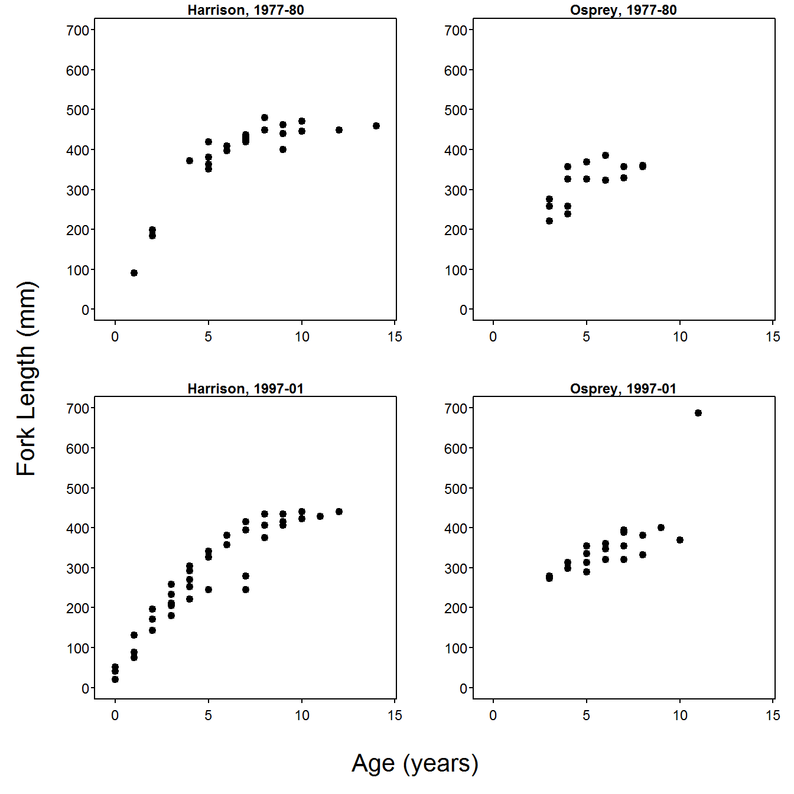

Common Axis Labels on a Grid of Subplots
One common graphical desire is to plot multiple graphics in a grid-like format with one axis label that serves as the label for each graph. This can be accomplished with arguments to par(), but the regions of a plot must be undersood first (the description that follows is modified from here).
Each plot consists of three regions – the plot area, the figure area, and the outer margin area Figure 1. The plot area is where the points or bars will be graphed. The area between the plot area and the figure area is where the axis ticks, labels, and title will appear. The area outside of the figure area is the outer margin area and is generally used to proivde extra space around the graphic or to place text. In most instances (and the default), the width of the outer margin area is 0 on all sides of the figure area such that no outer margin area exists. The size of the outer margin area is set with oma= in par(), which takes a vector of four values to serve as widths of the four sides of the outer margin area, beginning with the bottom and moving counter-clockwise. The default is par(oma=c(0,0,0,0)), but margins that are two “lines” wide on the top and bottom and one “line” wide on the left and right are set with par(oma=c(2,1,2,1)).

Figure 1: Schematic plot that illustrates the plotting area (inside the blue box), the figure area (inside the red box), and the outer margin area (between the dark gray and red boxes).
Common axis labels for multiple graphs can be placed in the outer margin area. In the example below, a 2-by-2 grid is created with mfrow() (as described in the book) and the bottom and left outer margin areas are increased to be three “lines” wide to allow for common x- and y-axis labels.
> par(mfrow=c(2,2),oma=c(2,2,0,0))The four subplot areas are then populated with scatterplots (note that the x- and y-axis labels are set to empty strings to suppress labeling the axes)
> xlmts <- c(-0.5,14.5)
> ylmts <- c(0,700)
> BTH1 <- BT %>% filterD(lake=="Harrison",era=="1977-80")
> plot(fl~age,data=BTH1,main="Harrison, 1977-80",
xlab="",ylab="",pch=19,xlim=xlmts,ylim=ylmts)> BTO1 <- BT %>% filterD(lake=="Osprey",era=="1977-80")
> plot(fl~age,data=BTO1,main="Osprey, 1977-80",
xlab="",ylab="",pch=19,xlim=xlmts,ylim=ylmts)> BTH2 <- BT %>% filterD(lake=="Harrison",era=="1997-01")
> plot(fl~age,data=BTH2,main="Harrison, 1997-01",
xlab="",ylab="",pch=19,xlim=xlmts,ylim=ylmts)> BTO2 <- BT %>% filterD(lake=="Osprey",era=="1997-01")
> plot(fl~age,data=BTO2,main="Osprey, 1997-01",
xlab="",ylab="",pch=19,xlim=xlmts,ylim=ylmts)The common x- and y-axis labels are then placed in the outer margin areas with mtext(). In this capacity, mtext() requires the text to be written as the first argument, a number in side= that indicates the margin on which to print the text (note that the side= argument in mtext() uses the same numbering scheme as other functions – 1=bottom, 2=left, 3=top, 4=right), a number in line= that indicates the line on which to print the text (defaults to 0), and outer=TRUE to force the text into the outer margin area. Further note that las=0 is used for the y-axis label to force the text to be parallel to the y-axis. This is only needed because las=1 was set globablly for producing this book.
The code below adds common x- and y-axis labels to the plots constructed above. The final plot is shown in Figure 2.
> mtext("Age (years)",side=1,line=0,outer=TRUE,cex=1.3)
> mtext("Fork Length (mm)",side=2,line=0,outer=TRUE,cex=1.3,las=0)
Figure 2: Grid of plots that uses the outer margin area to provide common axis labels.